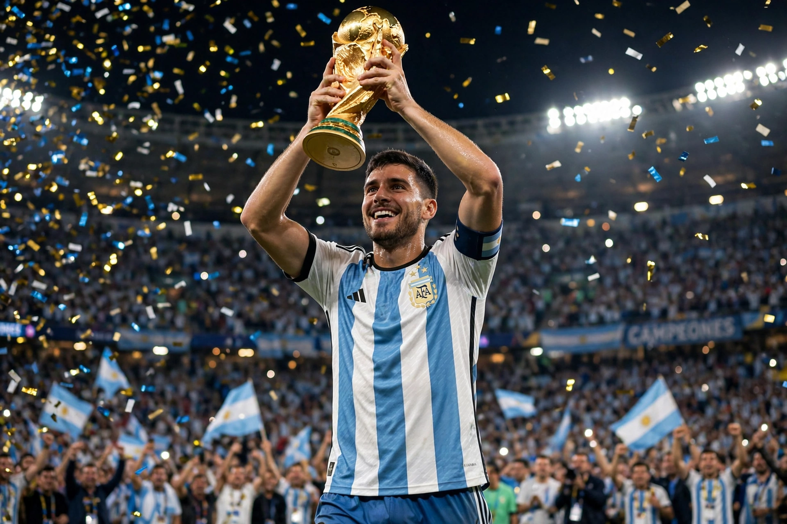

From Wikipedia, the free encyclopedia
| Lionel Messi | |
|---|---|
 Lionel Messi in Argentina's blue-and-white striped shirt, lifting the World Cup trophy in 2022 | |
| Full name | Lionel Andrés Messi |
| Date of birth | 24 June 1987, Rosario, Argentina |
| Position | Forward |
| Current team | Inter Miami CF |
| Senior career | Barcelona (2004–2021); Paris Saint-Germain (2021–2023); Inter Miami (2023– ) |
| National team | Argentina (2005– ) |
Lionel Andrés Messi (born 24 June 1987) is an Argentine professional footballer who plays as a forward for Major League Soccer club Inter Miami and captains the Argentina national team. Widely regarded as one of the greatest players of all time — and by many the greatest — Messi has won a record eight Ballon d'Or awards and holds the records for most goals in a calendar year (91 in 2012), most goals for a single club, and most goals in La Liga.
Born in Rosario, Messi moved to Spain at 13 to join Barcelona, which agreed to pay for treatment for his growth hormone deficiency. He spent his entire senior Barcelona career there until 2021, winning 35 trophies including ten La Liga titles and four UEFA Champions Leagues, forming the famed MSN attack with Neymar and Luis Suárez and a celebrated rivalry with Cristiano Ronaldo. Financial constraints forced his tearful departure to Paris Saint-Germain in 2021. In 2023 he joined Inter Miami, transforming the profile of soccer in the United States.
After years of near-misses — including the 2014 World Cup final — Messi led Argentina to the Copa América in 2021, ending a 28-year trophy drought. He then captained Argentina to victory at the 2022 World Cup in Qatar, scoring seven goals, winning the Golden Ball and completing his trophy collection in a final against France regarded as one of the greatest matches ever. Argentina retained the Copa América in 2024. Messi is Argentina's all-time top scorer and most-capped player.
Categories: 1987 births | Living people | Argentine footballers | FIFA World Cup-winning players